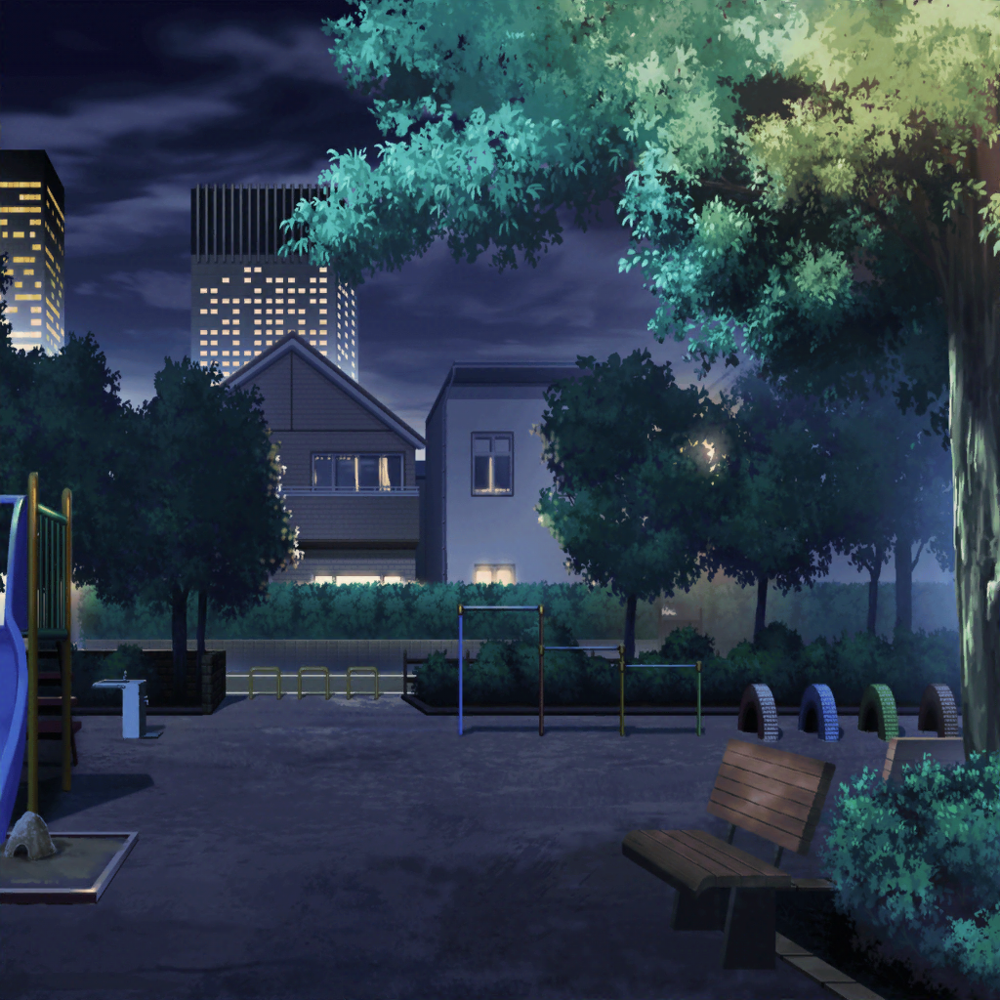

公園
日菜
はぁ、はぁ、はぁ……
日菜
ううー……こっちに飛んでいったところまでは
追えたのに、結局見失っちゃったよー……
紗夜
はぁ、はぁ……だから、言ったじゃない。
鳥を追うなんて無理だって……あら？
紗夜
日菜。あそこの草陰に落ちてるの……
短冊じゃないかしら
日菜
え……あ、本当だ！！
よかったー！！
日菜
きっとあたしのお願いの声が届いて、
落っことしてくれたんだね！
紗夜
どうかしら……
とにかく、見つかってよかったわね
日菜
うんっ！ ……はあーっ……でも、
走り回ったから疲れちゃったよ
日菜
ねえ、おねーちゃん。
ちょっと休憩していかない？
紗夜
……そうね。
私もあんなに走ったの久しぶりだから疲れたわ
日菜
やった！
じゃあじゃあ、あそこのベンチ座ろう！
紗夜
……
日菜
……
紗夜
……
日菜
……
紗夜・日菜
あの……
日菜
あっ……ごめん……
紗夜
いえ、いいのよ……
日菜
えへへ……おねーちゃんとこうやって話すの
久しぶりだから緊張しちゃう
紗夜
あなた、緊張なんかしないでしょう？
小さい頃から……
日菜
うん、普段はしないけど……
今日はなんとなく、さ
紗夜
（小さい頃から日菜は緊張もしないし、
落ち着いていたというか、怖いもの知らずだったというか……）
紗夜
（その頃からずっと、私のあとを追いかけて……
追い越して……）
紗夜
……
日菜
……ちゃん？ おねーちゃん……？
紗夜
えっ？
日菜
あの……大丈夫？
もしかして、走ったから具合悪いとか……
紗夜
いえ、大丈夫よ。
それより、この公園……
日菜
あっ！ もしかしておねーちゃんも覚えてるっ！？
紗夜
覚えているわ。よく小さい頃遊んだ公園よね
日菜
よくブランコに乗ったよね！
どっちが高くこげるか競争だーって言って
紗夜
いつも日菜のほうが高くこいでたわね。
まわりが心配するくらい高くまでこいで……
日菜
えへへ……そうだったっけ？
紗夜
……はあ。そういうことは覚えていないのね
紗夜
（私よりも高くこげるのが羨ましかった。
だからきっと、よく覚えているんだわ）
日菜
まー、いいじゃん！ 子供の頃の話だし！
あたしはおねーちゃんと一緒に遊べて
毎日すっごく楽しかったよ
日菜
今は、なかなか一緒にいられなくなっちゃったけど……
紗夜
……それは……
日菜
おねーちゃん、ギター、忙しいもんね。
あたしもパスパレ、なんだかんだ頑張ってるし
日菜
でも……
ううん、なんでもない
紗夜
日菜、どうしたの？
日菜
ううんっ！ 言葉にしたら、お願いごとって
叶わなくなっちゃうから
紗夜
？ そう……
紗夜
……そろそろ、行きましょう
日菜
えっ、もう……？
紗夜
笹の葉にそれ、つけるんじゃないの？
日菜
！
……うん！ そうだね